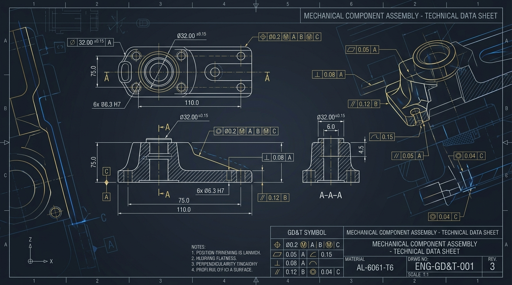

GD&T en maestranza: cuando medir no es suficiente
El dimensionamiento y tolerado geométrico permite que diseño, mecanizado, soldadura e inspección compartan un único criterio técnico en planos de fabricación.
Leer artículoDiseño · planos · documentación
Área preparada para publicar contenido sobre planos, modelado, documentación técnica, proyectos mecánicos y recursos visuales.

El dimensionamiento y tolerado geométrico permite que diseño, mecanizado, soldadura e inspección compartan un único criterio técnico en planos de fabricación.
Leer artículo